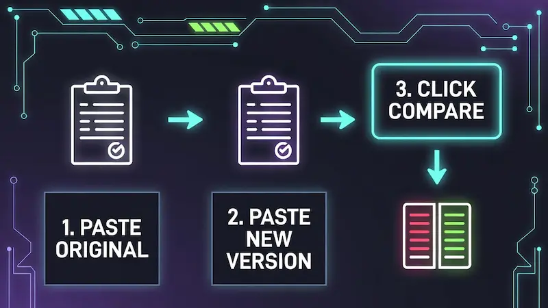

Ultra Diff Pro Max
Securely Compare Text, JSON, HTML & Code to find differences instantly. No Data Stored. Powered by Advanced Diff Algorithm.
Secure Code Comparison: The Industry Standard
In high-stakes development environments, a single missing semicolon or an accidental deletion can bring down production systems. Ultra Diff Pro Max eliminates human error by highlighting every discrepancy with byte-level precision.
Unlike other tools that process data on remote servers, our engine runs entirely within your browser's Web Worker environment. This guarantees zero latency and absolute privacy.
- Zero Data Leakage: Your code never leaves your device.
- Offline Capable: Works perfectly without internet after loading.
- Credential Safe: Safe for comparing config files with API keys.
Advanced Developer Features
Intelligent Formatting
Comparing minified JSON or CSS is impossible manually. Our built-in Beautifier instantly expands compressed code into readable structures before comparison, making debugging effortless.
Professional Reporting
Need to document changes for a client or team lead? Generate a standalone, styled HTML report of the differences with one click using the Export feature.
How to Use Effectively

- Load Content: Paste text or Drag & Drop files into the ORIGINAL and MODIFIED boxes.
- Pre-Process: If your code is minified, click Beautify to format it first.
- Analyze: Click COMPARE DIFFERENCES. Review deletions in Red and additions in Green.
Initializing secure discussion portal...